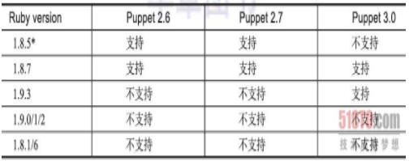

puppet
puppet简介
puppet是一种Linux、Unix、windows平台的集中配置管理系统，使用自有的puppet描述语言，可管理配置文件、用户、cron任务、软件包、系统服务等。puppet把这些系统实体称之为资源，puppet的设计目标是简化对这些资源的管理以及妥善处理资源间的依赖关系。
puppet采用C/S星状的结构，所有的客户端和一个或几个服务器交互。每个客户端周期的（默认半个小时）向服务器发送请求，获得其最新的配置信息，保证和该配置信息同步。每个puppet客户端每半小时(可以设置)连接一次服务器端, 下载最新的配置文件,并且严格按照配置文件来配置客户端. 配置完成以后,puppet客户端可以反馈给服务器端一个消息. 如果出错,也会给服务器端反馈一个消息.
安装puppet
puppet的安装方式支持源码安装、yum安装、以及Ruby的gem安装。官网推荐使用yum来安装puppet,方便以后的升级，管理，维护。但是Centos的默认源中没有puppet包，因此先要安装epel包。epel是企业版linux附加软件包（Extra Package for Enterprise Linux)的缩写，是一个由特别兴趣小组创建、维护并管理的，针对红帽企业版Linux(RHEL)及其衍生发行版本（比如centos)的一个高质量附加软件包项目。
安装环境装备：
1 配置主机名（并且设置互相解析）
/etc/hosts
2 配置防火墙策略（实验时直接关闭防火墙）
3 关闭selinux
4 配置ntp服务器并且保证时间同步
2
3
4
5
6
7
8
9
restrict default kod nomodify
server 127.127.1.0
fudge 127.127.1.0 stratum 10
service ntpd restart
chkconfig ntpd on
5 安装Ruby
由于puppet是基于Ruby开发的，并且不同的Ruby版本所支持的puppet版本也有区别，所以可以先安装Rvm(Ruby版本管理软件）来管理Ruby版本再去安装指定的puppet版本。
6 安装puppet
在服务端安装puppet、facter 客户端安装puppet-server、facter
##puppet的配置